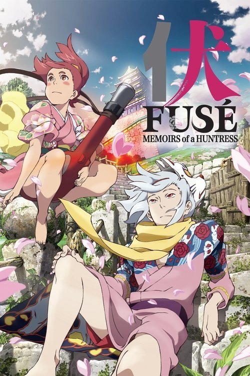

Fuse: Memoirs of the Hunter Girl (2012)
Sinopsis Rápida
En un Japón feudal envuelto en venganza y reencarnaciones, una cazadora implacable persigue a una poderosa figura legendaria, desencadenando una batalla épica entre el destino y la espada.
Sinopsis Detallada
Basada en la clásica novela japonesa "Nansô Satomi Hakkenden", "Fuse: Memoirs of the Hunter Girl" reimagina la historia de ocho samuráis, reencarnaciones de espíritus antiguos, en una sangrienta saga de venganza. Hamaji, una habilidosa cazadora, emprende una misión para acabar con Fuse, la figura central en este ciclo de muerte y renacimiento. La película nos sumerge en un mundo de combates implacables, intrigas políticas y una mitología rica en simbolismo, ofreciendo una exploración fascinante de la lealtad, el destino y la naturaleza cíclica de la violencia. A través de espectaculares escenas de acción y una estética visualmente impactante, la película nos presenta una reinterpretación visceral de la clásica historia japonesa.
¿Por qué tenés que verla?
- Experimenta la emoción de las batallas de samuráis en un contexto histórico cautivador.
- Descubre una estética visualmente impactante que captura la belleza y la brutalidad del Japón feudal.
- Explora una narrativa compleja que entrelaza la mitología japonesa con una historia de venganza generacional.
- Aprende sobre una reinterpretación única de una clásica novela japonesa.
Idea Extra
Comparación y contraste entre la adaptación cinematográfica de "Fuse: Memoirs of the Hunter Girl" y la novela original "Nansô Satomi Hakkenden", explorando las diferencias en la trama, personajes y temas.